{kind=link}

Julia Programlama Dili
Bölüm 2
Veri Tipleri Sistematiği
Sayfa 2
2.1 - Sayısal (Numeric) Tipler
Julia programlama dili genel tip haritasına bakılınca, sayısal tiplerin, Any<Number sınıfının alt sınıfları olduğu görülür. Sayısal tipler, bir önceki sayfada ayrınıtılı olarak incelenmiştir. Burada, sayısal tiplerin atamalardaki uygulamaları yapılarak daha yakından tanınmaları sağlanacaktır.
2.1.1 - Soyut (Absolute) Sayısal Veri Tipleri
2.1.2 - Somut Sayısal Veri Tipleri
Gerçel tipilerin , Integer, Float, Rational, Bool, Char soyut tiplerinin alt tipleri oldukları görülmüştü. Bu kısımda bu tiplerin uygulamaları üzerinde durulacaktır. Bu tiplerden Integer, Char,Bool, Rational veri tipleri, tamsayı sanal tipleridir. Bool Char ve Rational, alt tipleri olmadığından, aynı zamanda uygulanabilir somut tipler gibi de hareket ederler. Float bir ondalıklı sayı sanal tipidir. Gerek Integer gerekse Float sanal tiplerin, alt sanal tipleri bulunmaktadır. Uygulanabilir somut tamsayı tipler, bu alt soyut tiplerin alt somut tipleridir.
2.1.2.1 - Integer (Tamsayı) Veri Tipi
Soyut Integer tipinin alt tipleri, Julia programlama dilinin genel tip haritasından kopyalanarak aşağıda görüntülenmektedir:
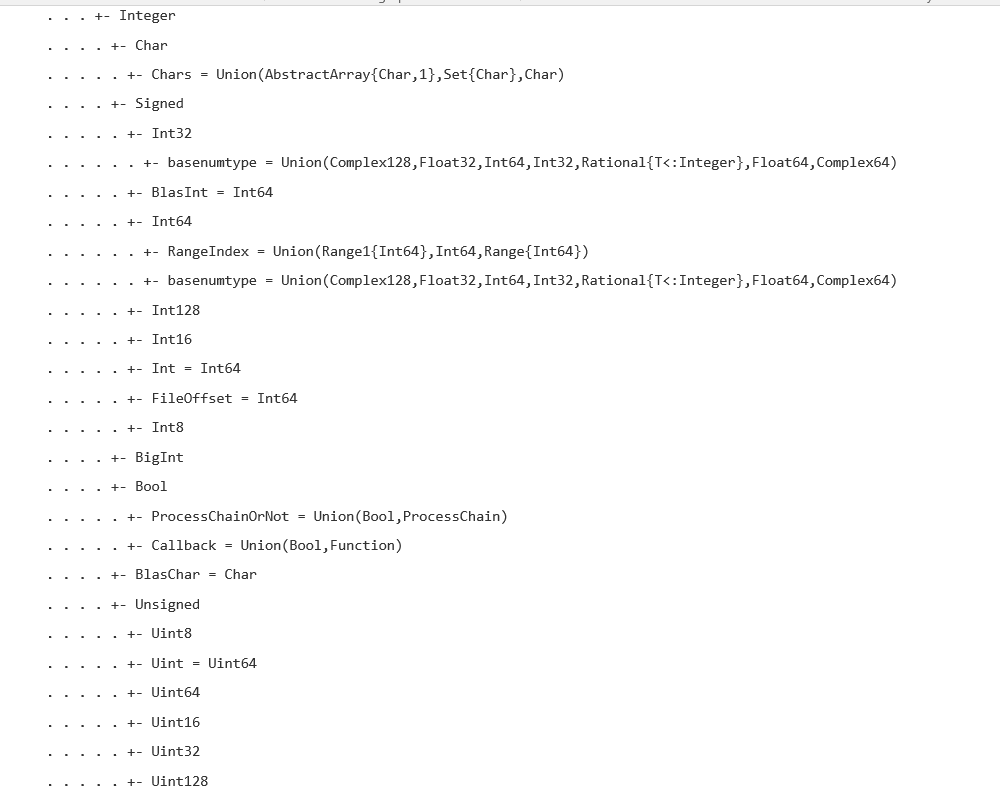
Soyut Integer veri tipinin, 5 soyut (ikisi hem soyut, hem somut) beş tane alt veri tipi bulunmaktadır. Bunlar Signed (İşaretli) ve Unsigned (İşaretsiz) , Char, BigInt, Bool alt soyut tiplerdir.
2.1.2.1.1 - Signed (İşaretli) Tamsayı Veri Tipleri
İşaretli tamsayı tipleri hergün kullandığımız, tamsayı tipleridir. 8 sayısı bit bayt, (8 bit), 16 sayısı iki bayt, 32 sayısı 4 bayt vb... olarak genişlikte bellek alanlarına yerleştiklerinden, taşıyabileckleri maksimum değer, bellek alanları genişledikçe artar. Böylece, typemax(Int8)<typemax(Int16)< typemax(Int32)<typemax(Int64)<typemax(Int128) olacaktır. Signed ve Unsigned Integer alt soyut tiplerinin somut alt tiplerinin typemax() değerleri aşağıda görülmektedir.
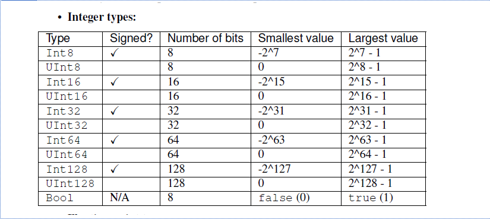
İşretli tiplerin maksimum değerleri ve değer aşımı olayları aşağıda görülmektedir:
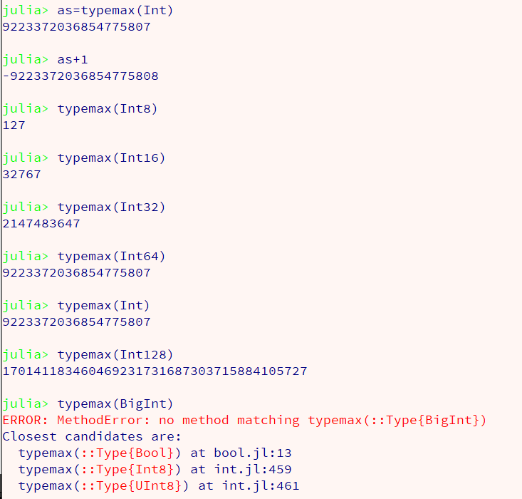
SI (Systeme International) (Standart) üstel yazım değerleri:
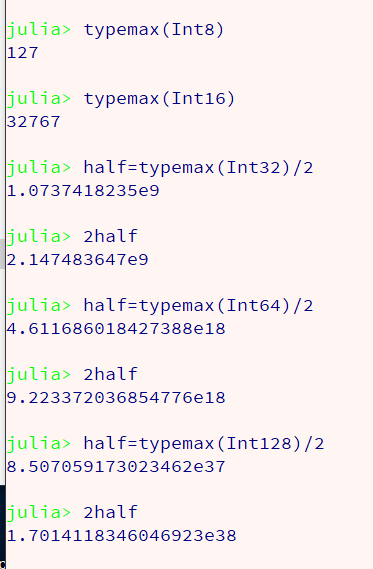
Bulıunan en yüksek değerler, Int8 için = 127, Int 16 için = 32767 , Int32 için=2.147483647e9, int64 için = 9.223372036854776e18 ve Int128 için = 1.7014118346046923e38 olarak saptanır. Bu konuda, Julia dokümantasyonu aşağıdaki bilgiyi vermektedir:
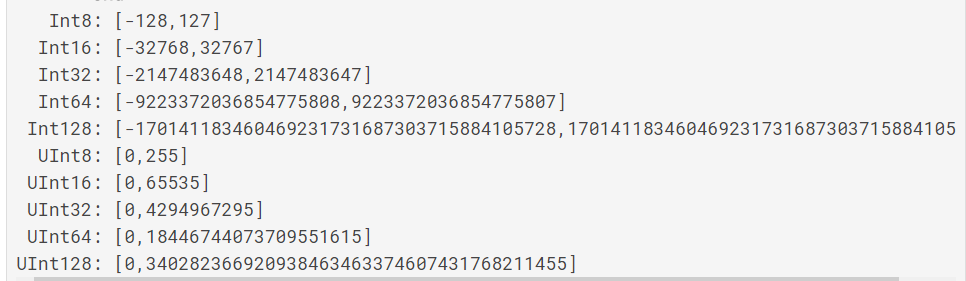
Varsayılan tamsayı tipi Int (Int64) için en yüksek tamsayının 9*10^18 değerinin altında olması güvenlidir. Bu oldukça yüksek bir sınırdır. Bu yüksek sınırın büyük bir olasılıkla bilinçli olarak aşılması olasılığı çok az olmalıdır. Farkedilmeden sınır aşımı konusunda ise, programcının çok dikkatli olması gerekir.
Julia programlama dilinde, atama sırasında, atanacak verinin veri tipinin belirtilmesi olanağı vardır. Örnek:
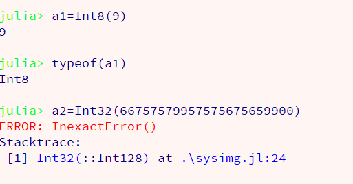
Yukarıdaki REPL sekansı görüntüsünden, eğer veri, verilmesi istenen veri tipi ile uyumlu ise atama sorunsuz gerçekleşiyor ve atama sonucunda değişkene Int8 tipinde bir veri yerleştiilmiş oluyor. Aslında veri 8 bit (1bayt) genişliğinde bir bellek alanına yerleştirilip, bu bellek alanına erişim kodu değişkene yerleştiriliyor.
Yine yukarıdaki REPL sekansı görüntüsünden, eğer atanacak veri, verilmesi istenen veri tipinin maksimum değerinden büykse, sistemin çakıldığı görülüyor.
Julia değişkenleri, modüler yapıdadır. Yani en yüksek değerden bir fazlası bile, atanacak değeri, verinin en alt değerinden başlayan bir değer ile değiştirilip atamayı gerçekleştirmektdir. Bu yanlış değerin atanması bir felaket sayılır. Tüm hesapların sonuçları yanlış olarak gelişir. Tam bir bilgisayar kazası yaşanmış olur. Tip aşımı sonucu,atanacak değer yerine bir başka değerin atandığı durumlarda, Julia yorumlayıcısı hiçbir uyarı vermez. Programcının dikkatli olup, atama işleminde, yanlış değer atandığının farkında olması gerekir.
Tamsayı veri tipi olan Int64 tipinin bir diğer adı (alias) Int sözcüğüdür. Int olarak belitilen veri tipi değerini, Julia yorumlayıcısı, Int64 olarak değerlendirir.
Oktal, (8 temelli), ikili (binary) (iki temelli), hex (hexagésimal) (16 temelli) sayılar Julia yorumlayıcısı tarafından tanınır ve işlemlerde sorunsuzca kullanılır. Bunlar aslında işaretsiz tamsayı (UInt) tipleridir.
Oktal sayılar 0o33 , ikili sayılar, 0b10100101 şeklinde, hex sayılar 0x0abc şeklinde yazılırlar.
Julia programlama dilinde, veriler başka tiplere dönüştürülebilirler, sadece, tiplerin uyuşması ve maksimum değerlerin aşılmaması gerekir. Bazı dönüşümlar aşağıda görülebilir.
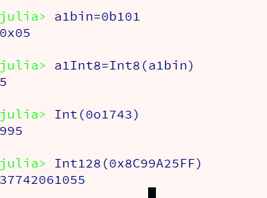
İstendiğinde, convert(veriTipi,değer) fonksiyonu da kullanılabilir.
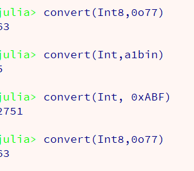
2.1.2.1.2 - Unsigned (İşaretsiz) Tamsayı Veri Tipleri
İşaretsiz tipler, ikili (binary), sekizli veya oktal, onaltılı veya hex sayıların uygulanmasını sağlar. Bu veri tipi 10 temelindeki (desimal) tamsayılar için değildir. Biraz önce bu tür sayıların giriş, kullanım ve on tabanlı sayılara dönüştürümü üzerinde bilgiler verilmiştir.
İşaretsiz tipler, varsayılan olarak hex kodları üzerinde çalışır. Hex kodları genellikle bellek yönetimi, device drivers gibi konularda kullanılır. Normal matematiksel çalışmalar sadece on temelli sistemler üzerinden yürütülür.
Julia programlama dili, hex sayıların ondalık değerler almasına olanak sağlar (sadece Float64 için). Örnekler: (Julia docs.)
julia>0x1p0< --- Enter
1.0
julia>0x1.8p3< --- Enter
12.0
julia>0x.4p-1< --- Enter
0.125
julia>typeof(ans)< --- Enter
Float64
Aslında, çalıştığım bilgisayar dilleri arasında ondalıklı hex sayılarını destekleyen tek programlama dilinin Julia programlama dili olduğunu söyleyebilirim. Bu yetenek, Julia programlama diline olağanüstü bir özellik kazandırmaktadır.
Julia programlama dilinde, alt bağlaç (underscore) ayraç olarak kullanılabilir. Örnek (Julia docs.)
julia>10_000, 0.000_000_005, 0xdead_beef, 0b1011_0010< --- Enter
(10000, 5.0e-9, 0xdeadbeef, 0xb2)
Aynı satıra girilen bir çok verinin çıktısı, topluluk (tuple) olarak adlandırılan, ve parantez içinde görüntülenen, parçalanamaz (immutable) ve değişmez (unchangeable) koleksiyon tipinde verilmiştir.
2.1.2.1.3 - Char Veri Tipi
Bir diğer tamsayı tipi, tek karakter verisi olan Char tipidir. Julia programlama dilinde, tek karakterler 'X' şeklinde, string değerleri, "Istanbul" şeklinde yazılır.
Char tipinin tamsayı tipi olmasının nedeni, her karakterin, "Unicode entry point" (Unicode giriş noktası) denilen, kendine özgü, bir tamsayı Unicode numarası ile kayıtlı olmasıdır.
Julia programlama dilinde, Char tipi veriler, 32 bit (4 byte) uzunluğunda tamsayı tipindedir. Char verilerinin sayısal değerleri, Unicode hex giriş noktalarıdır. Örnek olarak:
julia>Char('İ')< --- Enter
julia>'İ': Unicode U+0130 (category Lu: Letter, uppercase)
Bu şekilde İ harfinin Unicode giriş noktasının U+0130 olduğu anlaşılmış oluyor. Bu bir hex sayıdır ve Julia programlama dilinde, 0x0130 olarak belirtilir.
Bu değerin on temeline göre tamsayı değerinin bulunması için çeşitli tip dönüştürme yöntemlerinden yararlanılabilir.
julia>Int(0x0130)< --- Enter
julia>304
Aynı sonuç, öntanımlı convert(dönüştürülecek tip, veri) şekilde uygulanan tip dönüştürme fonksiyonun da yararlanılabilir.
julia>convert(Int64, =x0130)< --- Enter
julia>304
Bu şekilde, İ harfinin Unicode giriş noktasının U+0130 olduğu ve bunun hex karşılığının 0x0130 ve desimal (deka = on, Grekçe) karşılığının 304 olduğu anlaşılmış oluyor.
Eğer hex değerine gerek olmazsa, (her zaman hex değerine gerek duyulur!) o vakit doğrudan desimal değer saptanabilir.
julia>Int(Char('İ'))< --- Enter
julia>304
Ters yönden de uygulanabilir. Örnek olarak elimizde bir karakterin Unicode giriş desimal noktasının kodu bulunuyor. Bunun hangi harfe karşı geldiğini bulmak istiyoruz.
julia>Char(304)< --- Enter
julia>'İ': Unicode U+0130 (category Lu: Letter, uppercase)
Hex koduna gereksinme duymadan doğrudan desimal kodla, ilgili harfi bulmuş oluyoruz. Peki, Char('karakter') fonksiyonu, girilen karakter verisinin Unicode giriş noktasının hex kodlarını vermiyor mu idi? Şimdi nasıl oluyor da desimal kod girip, ilgili karakteri belirleyebiliyoruz?
Bunun yanıtı Julia programlama dilinin, üstün bir özelliği olan Multiple Dispatch (Çoklu İletişim) özelliğinden -farkında olmaksızın- yararlanmış olmamızdır.
Çoklu iletişim, bir foksiyonun, farklı veri tipinde argümanlar ile çalışcak şekilde, birçok kez tanıtılmış olmasıdır. Julia JIT derleyicisi argümanın veri tipine göre uygulanması gereken fonksiyonu bulur ve bu fonksiyonu uygulayarak sonucu belirler.
Aynı fonksiyon, hex kodunda bir argüman ile de çağrılabilir. (Aynı fonksiyon değil, çoklu iletişim özelliğinden yararlanılarak, aynı adlı fonksiyonun hex kodu ile çalışabilen sürümü).
julia>Char(0x0130)< --- Enter
julia>'İ': Unicode U+0130 (category Lu: Letter, uppercase)
Sonuç aynı, fakat yanıtı veren , desimal koda yanıt verenden farklı bir fonksiyondur. (Çoklu İletişim!).
Julia programlama dilinde,diğer diller olduğu şekilde, "\t", "\n"gibi kaçış (escape) karakterleri tanımlıdır.
2.1.2.1.4 - Bool Veri Tipi
Bool veri tipi mantıksal (Boolean) bir değerdir. Klasik çift değerli matematik mantıkta, (doğru = true) veya (yanlış = false) olarak sadece iki değer olduğu için, Julia programlama dilinde mantıksal veri tipi sadece true veya false olarak iki değer ile belirtilir.
Mantıksal veri tipinin bir tamsayı tipi olmasının nedeni, Julia programlama dilinde, doğrunun 1 (veya başka bir pozitif tamsayı), yanlışın da 0 sayısı ile belirtilebilmesidir. Yine de, sayısal değerlerle karıştırılmasının önlenmesi açısından, doğru için sadece true, yanlış için sadece false değerinin kullanılmasını şahsen sağlık veriyorum.
2.1.2.2 - FloatingPoint (Desimal Ondalıklı) Veri Tipi
Julia programlama dili genel tip şemasında, FloatingPoint tipi, aşağıdaki gibi tanımlanır:
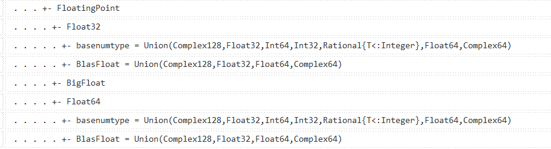
Bu şemada görüldüğü gibi, soyut FlotingPoint veri tipi, Any<Number<Real<FloatingPoint sırasındadır.
Soyut FloatingPoint veri tipinin uygulanabilir somut alt tipleri, Float32, Float64 ve BigFloat tipleridir.
Floating Point number, ondalıklı sayı anlamınadadır. Ondalıklı sayılar, farkedildikleri andan beri insanlık için sorun yaratmışlardır. Thales'den beri tamsayılar dünyasında mutlu mesut yaşayıp geometri yapan eski Grekler, M.Ö. beşinci yüzyılda, mesubu olduğu Pitagor sekti ile birlikte, bir gemi seyahatinde irrasyonel sayıların varlığını kanıtlayan Metapontumlu Hippasus'un, bu kanıtın sekt mensupları arasında yarattığı düşünce karmaşası nedeni ile denize atılıp boğulduğu söylenir. Tüm matematikçiler bunun aslında bir şehir efsanesi olduğunu ve bunun ondalıklı sayıların yarattığı sorunlara dikkat çekmek için uydurulduğunu umarlar. Biz de böyle olduğunu umarız. Ama ondalıklı sayılar, gerçekten matematiğin tam bir başağrısı olmuşlar ve olmakta da devam etmektedirler.
Öncelikle matematikçilerin ondalıklı sayılar ile çalışmadığını ve bu sayıların sadece gerçek dünyayı ilgilendirdiğini belirtelim. M.S. ondokuzuncu yüzyılda, Kronecker, "Tanrı sadece tamsayıları yarattı, diğer herşey insan yapısıdır" demiştir. Ne var ki, insanlık gerçek dünyada yaşadığından, matematikçiler için önemli olmayan bu sayılar, insanlık için bir varlık yokluk savaşı niteliğindedir. Bu nedenle, düşünsel dünyada yaşayan matematikçilerin aksine, gerçek dünyada yaşayan mühendisler için, bu sayılar temel taşı niteliğindedir.
Yirminci yüzyılda, bilgisayarlar tasarlanmaya başladığında, John von Neumann (Macar asıllı Amerikalı matematikçi), ondalıklı sayıların bilgisayarlara yerleştirilmemesini sağlık vermiştir. Matematik açısından çok doğru olan bu düşünce, gerçek dünyada yaşayan insanların da gereksinmelerinin karşılanması açısından, ne mutlu ki, kabul görmemiştir. Fakat problem de burada başlamıştır.
Gerçekte, ondalıklı sayı olarak kullandığımız sayılar birer yaklaşık değerdir. Doğada tamsayılar ile belirtilebilen büyüklükler dışında sayılarla açıklanan tüm gerçekler yaklaşık gerçeklerdir. Sadece taş sayısı gibi parçalanamayan (immutable) nesnelerin sayısı gibi sayılar, tam gerçekleri belirtirler. Boğaziçi boğazının genişliği gibi, uzunluk ölçümleri hep yaklaşık değerlerdir.
Ondalıklı sayıların hesaplanmasında farklı yöntemlerin kullanılmasını engellemek için, bu konuda ortak bir norm oluşturulması gerği ortaya çıkmış ve bu konuda, ünlü IEEE754 standardı oluşturulmuştur. Bu standart oluşturulduktan sonra, bilgisayar dillerinin bu standarda uyumu bir artı değer olarak açıklanmıştır. IEEE754 standardının oluşturulması sorunları tam olarak çözememeiş, çünkü bazı bilgisayar dilleri (özellikle Java) ticari bir ürünolduğundan bugün bile bu standarda uyup uymadığı, tartışma konusu olmaktan kurtulamamıştır.
Julia programlama dili bu konuda temiz dillerden biridir. Julia programlama dili, bir açık kaynak projesi olarak akademik bir ortamda, M.I.T de başlamıştır. IEEE754 standardına uyumu ikircikli değildir. Tam aksine, Julia programlama dilinin IEEE754-2008 e tam uygunluğu açıklanmıştır. Açıklama, hiçbir ticari nitelik taşımayan, akademik bir ortamdan ve JIT derleyicisi açık kaynak olan bir program dilinin yazarlarından geldiği için tam anlamı ile güvenilir niteliktedir ve bizim de matematik çalışmaları için, bu dili seçme sebeplerimizden biri, bu tartışma götürmeyen uyumluluktur. Doğal olarak, insanlar hesapladıkları sayılara güven duymak isterler. Julia programlama dili de, bunu sağlamaktadır. JuliaPro dağıtımının ticari olmasının, Julia'nın standarda uyumu açıklamasını karartma olanağı yoktur. JuliaPro hiçbir özgün farklı JIT derleyicisi kullanmamaktadır. Ticari olmasının nedeni, toplaması uzun sürecek paketlerin toplanıp, insanlara bir toplanmış dağıtım sunmaktır. Kaldı ki JuliaPro da topladıklarının önemli bir kısmını ücretsiz olarak sunmaktadır. Biz de çalışmalarımızda bu ücretsiz sürümden yararlanmaktayız.
IEEE754 uyumu ile sorunlar sona ermiş değildir. Standart sadece yaklaşık değerlerin hesabında bir ortak yöntem oluşturulmasından başka bir şey değildir. Sayıların yaklaşık olma sorunu aynen devam etmektedir. Standarda uyum, sadece hangi program dili kullanılırsa kullanılsın elde edilecek sayıların aynı olacağının sağlanmasıdır. Özetle ondalıklı sayılar yaklaşıktır ve bilgisayarla hesaplanmış olması, yaklaşık olmasını hiçbir şekilde düzeltememektedir. Bilgisarların da böyle bir işlevi şimdilik bulunmamaktadır. Son günlerde, hesaplanmış ondalıklı sayıların yaklaşık olmaları yanında, doğru da olmadıklarını ortaya çıkaran araştırmalar yayınlanmıştır. Doğru sonuçlar "Interval Aritmetik" denilen bir yöntemle hesaplanabilmekte, fakat günümüzde hiçbir bilgisayar bu yöntemle çalışmamaktadır. İlerisi için de bu konuda fazla bir çaba görülmemektedir.
Bu söylenenlenler moral bozucu olmasın, yaklaşıklıklar, farklılıklar mikro düzeydedir ve gerçek yaşamı etkileyecek bir nitelikleri yoktur. Yaşadığımız dünyada herşey görecelidir ve doğrunun ne olduğunu kimse bilemez. Ondalık değerler gerçektir. Bilgisayarlar bu değerlerin hesabında büyük bir hız ve düzen sağlamaktadırlar. Bilgisayarlar kullanılmaya başlandığından sonra, dünya inanılmaz bir şekilde değişmeye başlamıştır. Bilgisayarla statik ve dinamikleri hesaplanmış hiçbir köprü yıkılmamış, hiçbir bina çokmemiş, hiçbir füze hedefini şaşmamıştır. Hatalar daima programlama hatalarından kaynaklanmıştır. Bu bilgiler de, içimizin rahat olmasını sağlamak ve iyi programcı olup hata yapmamamız konusunda uyarıda bulunmak amacı ile verilmiştir.
Julia programlama dili özgün dokümantasyonda, ondalıklı tipler için sadece aşağıdaki bilgiler verilmektedir.
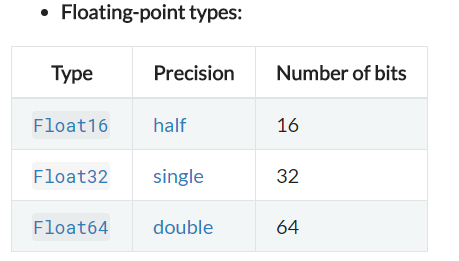
Başka hiçbir bilgi verilmemesinin nedeni, Julia programlama dilinin, IEEE754 standardına uygunluğunun teyidi ve değer bilgilerinin standardın resmi dokümantasyonundan alınması içindir. Biz de öyle yapalım. Aşağıdaki tablo wikipeadia dan alınmıştır:
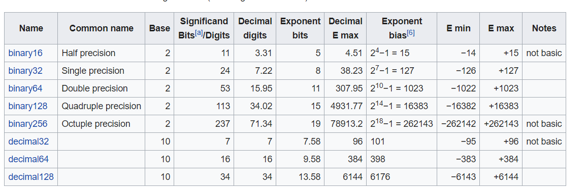
Daha açıklayıcı bilgiler, Steve Hollash web sitesinden alınmıştır.
Julia programlama dilinde, 64 bitlik mimariye sahip makinelerde, geçerli varsayılan ondalıklı sayı tipi çift duyarlıklı Float64 dür. Float128 henüz desteklenmemektedir. Bu açıdan, ondalıklı sayı atamalarında, tip zorlaması yapılması gereksizdir. Atamada veri tipi seçimine gerek yoktur. Sadece atama yapılması ve tip seçimi Julia yorumlayıcısına bırakılmalıdır. Julia yorumlayıcısı, 64 bitlik makinelerde, ondalıklı sayı veri tipini, , atama sonunda Float64 (IEEE754 çift duyarlıklı ondalıklı sayı) olarak belirileyecektir. Julia yorumlayıcısının algıladığı makine mimarisi, sys.WORD_SIZE ile incelenebildini anımsayalım:
julia>sys.WORD_SIZE
64
Programlarda önemli olan bir değer de, makine epsilonu denilen ve kullanılabilecek en küçükk değeri belirten bir sayıdır. Bu sayı eps(Float64) ile sorgulanabilir.
julia>eps(Float64)
2.220446049250313e-16
Makine epsilonu, uygulandığı değişkenin değerine göre farklılık gösterir. Bu nedenle, adreslenebilir bir önceki ve bir sonraki değerler, prevfloat ve nextfloat saklı sözcükleri ile sorgulanabilirler.

Burada gilen değerin Float32 tipinde olduğu görülüyor. Ondalıklı bir sayının ikili (binary) göserimi bits saklı sözcüğü ile görüntülenebilmektedir.
Julia yorumlayıcısının tip yükseltme özellği, gerçek veya kompleks tüm sayısal tiplerin, açık (explicit) tip değiştirme (type casting) bildirimine gerek kalmadan aritmetik işlemlerinin gerçeklştirilmesini sağlar. Bu da matematik çalışmaları için büyük bir kolaylıktır. Ama, aynı zamanda, programcının olayları yakından izlemesi için bir başka nedendir.
Julia programlama dilinde, ondalıklı sayıların iki tane sıfır değeri vardır. Bunlar +0.0 ve - 0.0 dır. Bu iki değer birbirine eşittir ve sıfır olarak hareket ederler, sadece iç ikili sayı karşılıkları farklıdır.
Julia programlama dilinde, bazı ondalıklı değerler özeldir:

Bu sayılar IEE754'e göre, prensip olarak, bazı özel işlemlerin sonucunda oluşurlar:
julia>1/Inf< --- Enter
0.0
julia>1/0< --- Enter
Inf
julia>-5/0< --- Enter
-inf
julia>0.000001/0< --- Enter
Inf
julia>0/0< --- Enter
NaN
julia>500+Inf< --- Enter
-Inf
julia>500-Inf< --- Enter
-Inf
julia>Inf+Inf< --- Enter
Inf
julia>Inf-Inf< --- Enter
NaN
julia>Inf*Inf< --- Enter
Inf
julia>Inf/Inf< --- Enter
NaN
julia>0*Inf< --- Enter
NaN
Julia yorumlayıcısı Float16 tipini sadece tanımakla yetinir. Uygulamada ondalıklı tipler, Float32 den başlar.
Literal (Elle girilen sayılar) (Lettera: Lat. Mektup, Harf, Yazım, Edebiyat, Okumuş Adam) Float 32 değerleri, e yerine f girilerek tanımlanırlar:
julia>0.5f0< --- Enter
0.5f0
julia>typeof(ans)< --- Enter
Float32
julia>2.5f-4< --- Enter
0.00025f0
Aynı şekilde veriler Float32 tipine de dönüştürülebilirler:
julia>Float32(-1.5)< --- Enter
-1.5f0
julia>typeof(ans)< --- Enter
Float32
Yine de ondalıklı sayı literallerinin girişlerinin 4.5e-6 gibi yapılarak, Julia yorumlayıcısının girilen veriyi varsayılan olarak Float64 olarak tiplemesinin en çok uygulanan yöntem olduğunun açıklanmasında yarar bulunmaktadır. Julia yorumlayıcısına, sıradışı veri tiplerini empoze etmenin (zorlamanın), çok çok özel durumlar dışında bir yararı yoktur. Tam aksine, çoğunlukla işleri zora sokar.
typemax() ve typemin() değerleri, Float tipleri için de uygulanabilir:

Gösterimi tam olarak olanakllı olmayan ondlaıklı sayılar, yuvarlatılmak zorundadır. Julia programlama dili, yuvarlatmayı en yakın değere tek ve çift sayılar olmasına göre uygular. bu uygulama uzun sürede gerfçeüğe en yakın değeri vermekle tanınır. Yuvarlatma yöntemi kullanıcının isteğine göre değiştirilebilir. Julia docs., bunun yöntemini aşağıdaki gibi tanımlamaktadır:
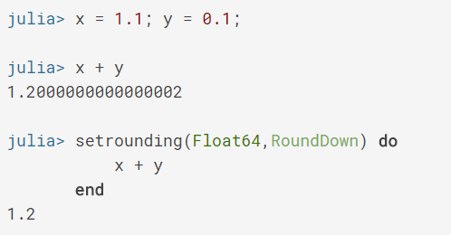
Julia yorumlayıcısının varsayılan olarak uyguladığı ve en sağlıklı yöntem olarak tanınan RoundNearest yuvarlatma yönteminin değiştirmesi, ancak çok gerekli olduğu hallerde uygulanmalıdır.
2.1.2.3 - Orantılı (Rasyonel) Sayılar
Orantılı sayılar, "iki bölü üç" olarak söylenen ve bir şeyin tam üçe bölünüp, tam iki kısmının alındığı bir tamsayı türüdür. Bölüm işlemi yapılırsa ondalıklı değeri ortaya çıkar. Bölüm işlemi yapılmadığında tamsayı olarak kalırlar.
Julia programlama dili, pek az programlama dilinin sahip olduğu, orantılı değer veri tipine sahiptir.
Julia programlama dilinde Orantısal (Rational) veri tipinin, genel tipi sistemi içindeki konumu aşağıda görülmektedir.
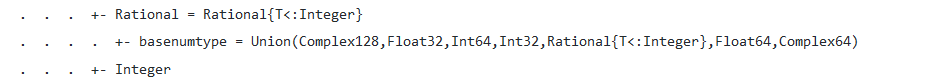
Julia programlama dili tipi siteminde Rational veri tipi, Any<Number<Real<Rational olarak belirlenmiştir. Any'den sonra üçüncü alt soyut tip sınıfını oluşturan (aynı Integer tip konumunda) Rational tip 64 bitlik makinelerde, Rational{Int64} olarak örneklenir.
Veri tipi listesinde orantısal veri tipi, Rational(T:<Integer) açıklaması bulunmaktadır. Bu not, Rational tipi verilerin Integer tipindeki veri tipleri ile oluşturulacağını belirtir. Aşağıda, bu veri tipinin uygulama örnekleri görülmektedir:
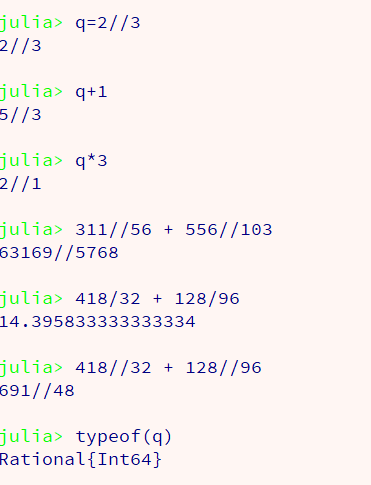
Yukarıdaki örnekte görülebileceği gibi, Julia yorumlayıcısı, orantılı sayıları algılamakta ve orantılar üzerinde tanımlanan işlemleri, verinin orantı niteliğini gözeterek gerçekleştirmektedir. Açık bir bölme işlemi yapılmadıkça sonuçlar birer orantısal tam değer olarak verilmekte ve basitleşebilir olduğunda basitleşirilmektedir. Bu işlemler el ile hesaplamada çok zaman alan uğraştırıcı hesaplar olmasına karşın, Julia ile programlama gereği olmadan, sadece salt REPL ortamında orantılarla çalışmak bile, önemli ölçüde zaman kazanılmasını sağlamaktadır.
2.1.2.4 - Kompleks Sayılar (Complex) Veri Tipi
Julia temel veri sistemi incelendiğinde, kompleks sayılar veri tipinin, Any>Number>Complex olarak üçüncü alt düzeyde ve sayılar tiplerin ilk düzey alt tiplerinden biri olduğu görülür. Kompleks sayılar ile çalışma olanağı sağlayan kompleks sayı verileri, 64 bit float değerleri ile yapılandılmıştır. bir kompleks sayının tanımı için, örnek olarak, 2+5im yazılması yeterlidir. Fakat istenirse, öntanımlı complex(a,b) fonksiyonu da çağrılabilir.
Eğer a = 2.3 ve b = 3.4 şeklinde iki atanmış değer varsa, öntanımlı complex(a,b) fonksiyonu çağrılarak, kompleks sayı oluşturulabilir. Örnek,
julia>a =2.3; b =3.4;complex (a,b) < --- Enter
2.3 + 3.4im
Aşağıda bazı kompleks sayı uygulama örnekleri görülmektedir.
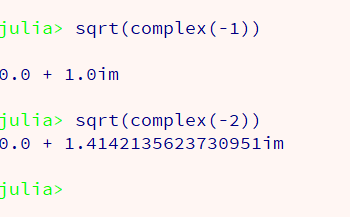
Julia programlama dilinde, kompleks sayıların sanal kısımları, im (imajiner karşılığı) olarak belirtilmektedir. Kompleks sayılar için tüm aritmetik işlemlerin ve sin(), cos(), sinh(), sqrt(), exp(), abs(), abs2() gibi öntanımlı fonksiyonların uygulanabilirliği sağlanmıştır. Örnek,
julia>(2+3im)*2<---(Enter)
4+6im
julia>(2+5im)*(3+2im)<---(Enter)
6+10im
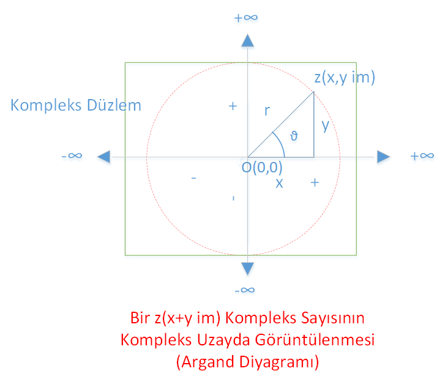
Bir Kompleks Sayının Geometrik Gösterimi
Yukarıdaki şemada bir kompleks sayının iki boyutlu uzayda geometrik gösterimi görülmektedir. Bu diagram, Jean-Robert Argand (1768–1822) adına "Argand Diyagramı" olarak adlandırılmıştır. Bunu ilk teklif eden Norveç-Danimarkalı Caspar Wessel (1745–1818) dir(Wikipedia). Kompleks sayılar ilk olarak, Gerolamo Cardano (1501- 1576) tarafından açıklanmış ve geliştirilmelerine Bombelli, Hamilton gibi matematikçiler tarafından katkılar yapılmıştır.
Kompleks sayılar, üçüncü derece denklemlerin köklerinin bulunmasında, negatif sayıların kareköklerinin alınması gerekince bir çözüm oluşturabilmek amacı ile önerilmiştir.
Herşey, negatif sayıların kareköklerinin tanımlanması çabaları ile başlamıştır. Bir sayının karekökü, kendisile çarpıldığında (karesi alındığında) aynı sayıyı veren sayı olarak tanımlanmıştır. Ancak pozitif bir sayının karekökü olabilir ve bu karekök pozitif veya negatif bir sayı olabilir. Çünkü, konvansiyonel olarak, negatif sayıların bibirleri ile çarpılmaları pozitif bir sayı verir. Yani negatif sayıların kareleri, pozitif sayılardır. Böylece,
√4 = abs(2) = +2 veya -2 olarak belirtilir. Yani pozitif bir sayının iki karekökü vardır. Bunlardan biri pozitif diğeri negatif kareköklerdir. Ama negatif bir sayının karekökü olamaz, çünkü karesi negatif olan hiçbir sayı bu dünyada yoktur. Bu dünyada tüm eksi sayıların kareleri pozitif sayılardır. Ama belki başka bir dünyada kareleri negatif olan sayılar olabilir. Örnek olarak -4 sayısını düşünelim:-4 sayısının karekökü bu dünyada yoktur. Ama belki başka bir dünyalarda vardır. Bir basitleştirme yapalım:
√-4= √4 x √-1
Bu düzenlemede, ilk terim kesinlikle gerçek bir sayıdır ve tüm gerçek sayılar gibi, bir skalerdir. Yani, tek boyutlu (çizgisel) bir uzayda, gerçek sayılar skalasında (ölçütünde) yeri belirlidir. Yani gerçel sayılar skalasında (ölçüt çizgisinde) yeri tek bir nokta ile belirtilebilir. Bu yer skala orijininin sağında (pozitif kısmında) veya solunda (negatif kısmında) olabilir.
Sayının √-1 kısmını düşündüğümüzde, kesin olan, yaşadığımız dünyada böyle bir sayı olmadığıdır. Böylece, yaşadığımız dünyadan başka, bir dünyayı düşüncemizde yaratmış olduk. Bu dünya gerçek olmayıp sadece sanımızda oluşturulmuş olduğundan, buna "Sanal Dünya " adı verilmiştir. Televizyondaki popüler "Fringe" dizisi, böyle paralel dünyaları konu yapmaktadır.
Sanal dünya üzerine hiçbir bilgimiz olmadığından, √-1 üzerinde de hiçbir bilgimiz olamaz. Bu sayıya i sayısı (sanal=imajiner) sayı adı verilmiştir. Sanal i sayısı, gerçek dünyada, √-1 değerine denk gelmektedir. Bu durumda, √-1 değeri, sanal bir dünyadan,gerçek dünyaya aksederek gerçek dünyanın bir sayısı haline gelmiş ve değeri √-1 olan, gerçek bir sayı olarak düşünülebilir.
Böylece, √-4 = 2 x √-1 = 2i olarak belirtilebilir.
Bu gösterimle, √-1 x √-1 = √-1^2 =- 1 olarak gerçek dünyaya aksettiğinden, √-4 = 2i olarak gösterimi doğrulanmış olur. Çünkü itibari olarak, (2i)^2 = 4(√-1)^2 = 4 x (-1) = -4 olarak hesaplanır. Bu da gerçek dünyada, cebirsel işlemlere bir bütünlük sağlamış olur. Cebrin Temel Yasası (Fundamental Theorem of Algebra), "n dereceden bir polinomun n tane kökü vardır" ancak kompleks sayılar kuramı tam olarak oluşturulduktan sonra açıklanabilmiştir.
Kompleks sayılar genel olarak, z = a+bi olarak belirtilir. Burada, a sayısı kompleks sayının gerçek (reel) kısmı, b sayısı ise, kompleks sayının sanal (imajiner) kısmı olarak adlandırılır.
Gerek a sayısı, gerekse b sayısı, gerçel sayılar olarak ifade edilirler. Eğer a sayısı sıfır ise, kompleks sayı tam sanal bir sayı, eğer b sayısı sıfır ise, kompleks sayı bir gerçek sayı olur. Bu da, gerçek sayıların, aslında kompleks sayıların bir alt kümesi olduğunu açıklar.
Argand diyagramının çizilebilmesi için, sanal sayıların da aynı gerçel sayılar gibi, birer skaler oldukları varsayımı yapılmıştır. Ayrıca, Argand diyagramında, gerçek sayılar skalasının yatay, sanal sayılar skalasının da düşey olacağı varsayılmıştır. Bu düşünce ile sanal sayıların, bir x-y düzleminde (2D düzlemi), z(a,b) koordinatlarında bir nokta olarak belirtilmesi olanağı sağlanmış olmaktadır.
Kompleks sayı, z(x,y) koordinatlarında bulunan bir noktadır. Burada x gerçel kısımdır ve tüm gerçel sayıların gerçel sayılar skalasındaki hareketi gibi sağa ve sola hareketle yeri ve değeri belirlenmektedir. Kompleks kısım ise, y koordinatı ile belirlenmektedir. Kompleks kısmın değeri, yukarı-aşağı hareketle yer değiştirebilen kompleks kısmın konumu ile belirlenmektedir.
Bir kompleks sayının orijinden uzaklığı, r ile gösterilen ve hipotenüse karşı gelen uzunlukla belirlenmektedir. Bu uzunluk abs(a +bi) şeklindeki kompleks sayının mutlak (absolut) değeri ile belirlenmektedir. Genel formül, aşağıdaki gibidir,
|a + bi| = sqrt(a^2 + b^2)
Görüldüğü gibi bu bir dik üçgenin hipotenüsünün uzunluğunu veren Pythagoras formülüdür. Prensip olarak, bir kompleks sayının, kompleks uzayda, orijinden uzaklığı, şekilde görüldüğü gibi, bir dik üçgenin hipotenüsün uzunluğu olarak belirtilebilmektedir. Örnek olarak,
julia>abs (3.0+2.8im)< --- Enter
4.103656905736638
abs2() fonksiyonu ise abs^2() değerini verir. Örnek,
julia>abs2(3.0+2.8im)< --- Enter
16.84
olarak belirlenir. Hesaplandığında,
julia>4.103656905736638^2< --- Enter
16.84
değerini vermektedir. Yani abs2( a+b im) = abs((a+b im)^2)
olarak tanımlanmıştır. Buradan, r^2 = x^2 + y^2 (Pythagoras formülü) elde edilir.
Kompleks sayılarda, faz açısı θ,
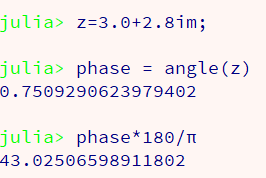
Bir z değişkeni olarak tanımlanmış kompleks sayının, kısa kenarı x, uzun kenarı y olan bir dik üçgen olarak tanımlanırsa, dik üçgenin kısa kenarının hipotenüsle yaptığı θ açısının radyan olarak ölçütü, ön tanımlı angle (z) fonksiyonundan yararlanılarak hesaplanabilmektedir. Bu değer, şekildeki kompleks sayı için, 0.75 radyan veya 43.02 º (derece) olarak hesaplanmıştır.
Dikkat edildiğinde, kompleks sayınının gerçek değeri (x) θ açısının kosinüsü, sanal değeri (y) ise, θ açısının sinüsü olduğu görülür. Buradan Euler formüllerine, dolayısı ile trigonometrik değerlerin, sayısal değerlere bağlantıları ulaşılmış, hiperbolik trigonometrik fonksiyonlar, sinh(x), cosh(x) vb. değerleri tanımlanmıştır.
Julia programlama dilinde tüm bu kompleks sayı işlemlerinde tam destek sağlanmıştır. Kompleks sayı işlemleri üzerine geniş bilgi ve örnekler, bu sitede "Genel Matematik"konusunda işlenecektir.
Created With Microsoft Expression Web 4